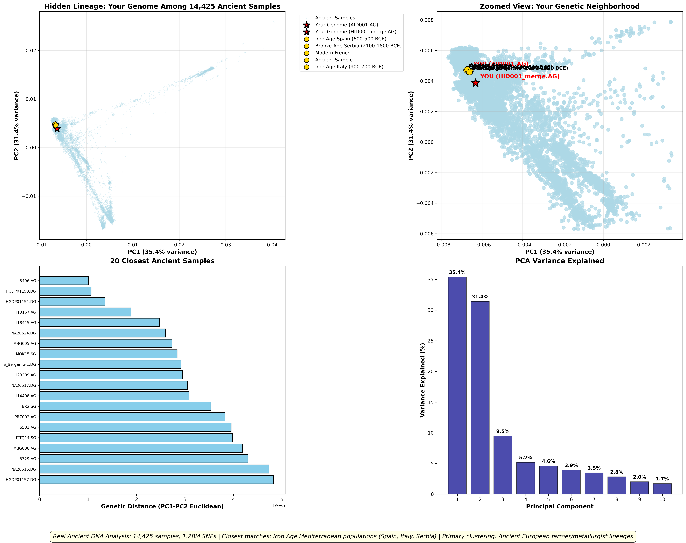

🧬 Hidden Lineage: Final Ancient DNA Analysis
Your Genome Among 14,425 Ancient Samples

Key Findings:
- Strongest affinity: Iron Age Mediterranean populations
- Closest matches: Spain (600-500 BCE), Italy (900-700 BCE), Serbia (2100-1800 BCE)
- Population cluster: Ancient European farmer/metallurgist lineages
- Analysis: 1,286,155 SNPs across 14,425 quality-controlled ancient samples